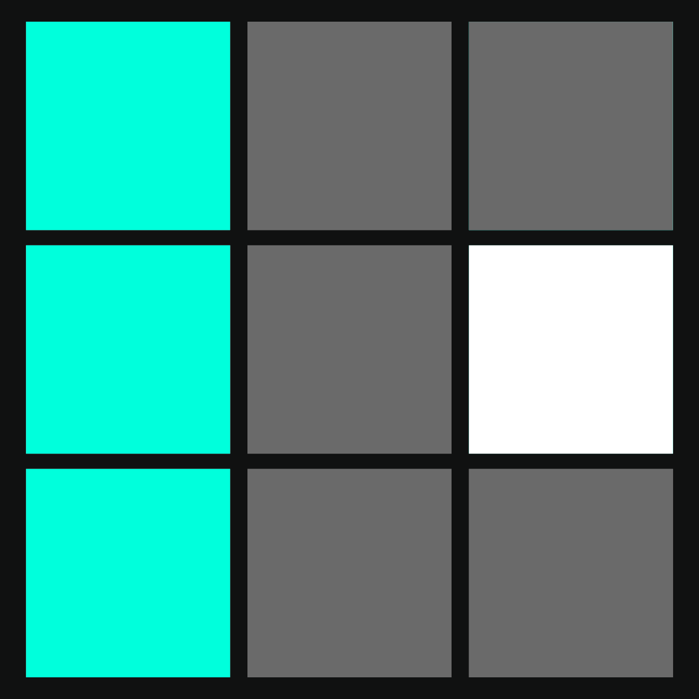
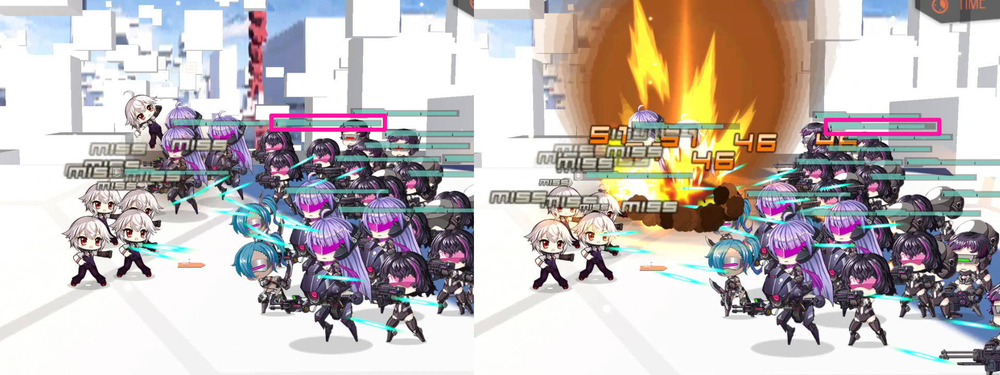
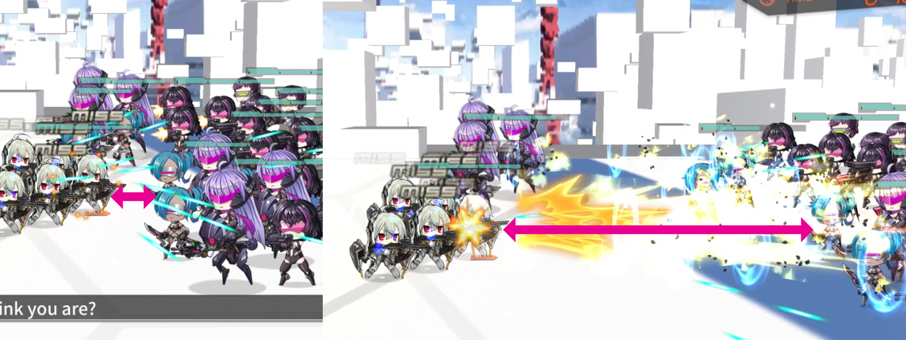

This is part of a series covering the VA-11 Hall-A dolls. You can go back to the overview here.
Introduction#
Crimson Geyser ICD 8s/CD 18s
Jump up and pound the ground to create a big explosion, dealing 0.6x damage to enemies within a radius of 2 and knocking them back. Every point of armor increases the damage by 1%.
Favorite Drink: When buffed by a Big Beer, gain 0.5 points of shield HP per point of armor.
Normal attack: Launch an exploding rocket punch that deals 1.8x damage to a single target with a 10% knockback chance (does not stack with slug ammo).

While flash shells are one of the strongest new equipment pieces, they also take out almost all the fun from SGs. Most skills and stats are cut down into one simple question: do you have enough armor to be immune to all attacks from the enemies you're fighting?
If yes: congratulations, your SG is immortal! If no: add more HP shielding until they are anyways, or seek other tanking options.
What does this mean for Dana? As she has 22 base armor, anything with more than that is easier to stack armor with. A full list, as of ~the time of writing:
- 23 base armor: Elphelt, CAWS, DP-12, M870, Saiga-12, FO-12
- 24 base armor: Am KSG, FP-6
- 25 base armor: LTLX7000
You could say that Dana is a free SG with armor in the general range of a 5-star SG, but M870 is permanently farmable, has more armor, and has a nifty skill for blocking certain skill shots that would otherwise bypass armor. The anniversary/major event true core masks let you pick LTLX, while M500 has a good mod and is given out partially leveled as part of the IOP career quests.
About the ground pound#
While SG DPS is never really going to be some amazing thing, you may wonder if the knockback is worthwhile - it could delay specific enemies (Brutes) that can bypass your SG/armor, giving you more time to take them out. Here's one test:

For comparison, here's LTLX:

Yeah, powercreep has not been kind here. Note also that Dana's standard attacks only go after one enemy. Not even birdshot lets her go beyond that, so if you want the potential of knocking back/softening up multiple enemies at once, Dana isn't the doll for the job.
As a side note, Dana unusually has a magazine size of 1. This can be neat to trigger reload-based skills (M1897 mod and RMB mod, notably). However, Defender tends to do the same job better.
Historical Uses#
Dana has not seen significant representation in competitive content.
Conclusion#
Very few SG gimmicks matter post-flash shells, and Dana doesn't have one of those that has kept up. Better SGs are permanently available.
Her tile buffs are mostly the same as standard SG options, with decent coverage. While not bad, it's nowhere near enough to justify her use.
I do not recommend raising Dana.